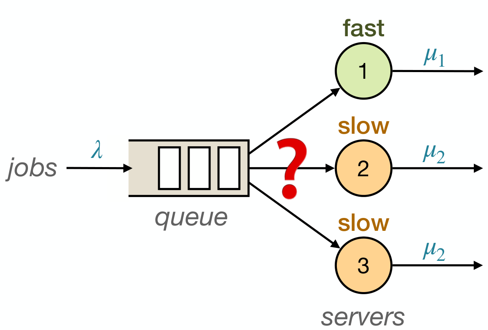

Three key lemmas (assignment closure, event closure, value function consistency) of the threshold-optimality proof are verified in Lean 4, with code on GitHub.
Abstract
This paper studies the optimal control problem of a queueing system with three servers: one fast server and two identical slow servers. The two-server version of this problem, with one fast server and one slow server, was introduced by Lin and Kumar (1984), and the optimal policy has been shown to be of threshold type. However, generalizing this result beyond the two-server setting has been considered an open problem. In this paper, we resolve the first nontrivial case by proving that a threshold policy is optimal for the three-server system considered. The core technical ideas in this paper are generated by GPT-5.5 Pro. We have included a short report describing the authors' interactions with GPT-5.5 Pro. The authors verified the proofs and rewrote the paper for better rigor, clarity, and exposition. In addition, three key lemmas have also been verified in Lean 4.
Problem
Lin and Kumar showed that a threshold policy is optimal for a queue with one fast and one slow server. Whether this extends to more servers has remained open. The first nontrivial case studied here is one fast server and two identical slow servers.
Approach
The system is modeled as a Markov decision process with a simplified state of (jobs at the fast server plus queue, jobs at the slow servers). The authors define a cone of value functions by six inequalities and show via modified value iteration that the cone is preserved and that the limit equals the optimal value function. The average-cost case follows as a limit of the discounted-cost case. The core ideas came from GPT-5.5 Pro, and three key lemmas were verified in Lean 4.

Figure 1: A queueing system with one fast server and two identical slow servers. We assume 0<\mu_{2}<\mu_{1} , so Server 1 is the fast server and Servers 2 and 3 are the slow servers.
Results
Under both discounted-cost and average-cost criteria, an optimal policy always keeps the fast server busy and uses two thresholds q_L <= q_H to assign jobs to the slow servers. Lemmas 3-5 are machine-checked in Lean 4.